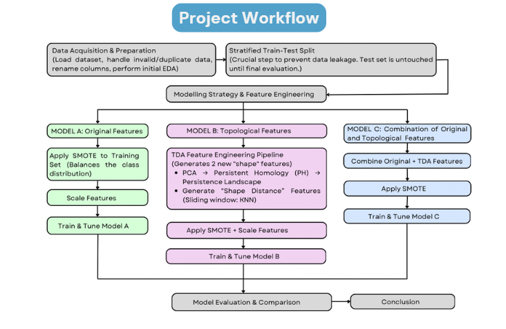
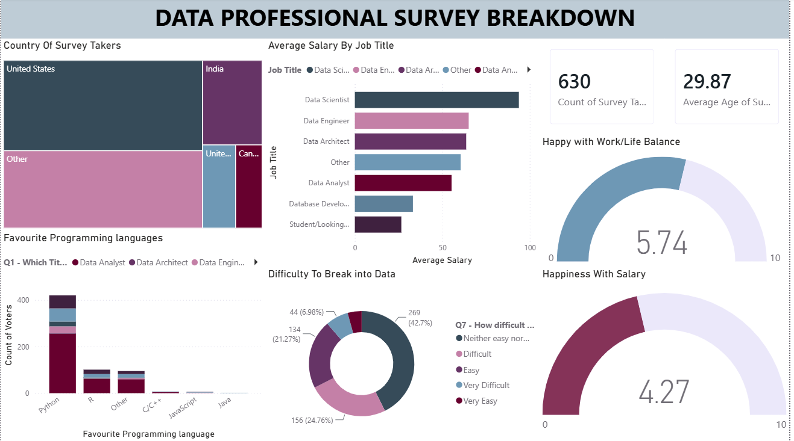

Executed an intensive 5-day independent investigation on a 500,000-row enterprise lending dataset inside Databricks SQL. Built multi-stage data pipelines using CTEs and advanced window functions to audit macro portfolio health, detect planted operational anomalies, and engineer analytical workarounds for missing repayment ledgers. Successfully isolated high-risk borrower segments, quantified a ₹35.18 Cr Value at Risk (VaR), and reconstructed temporal failure timelines to guide executive-level risk management.
Evaluated comparative time-series stock returns across top Bursa Malaysia semiconductor equities (ViTrox, MPI, Frontken, Inari, and Unisem) using 1,223 daily trading observations. Utilizing Box–Jenkins methodology alongside EViews and Minitab, I benchmarked ARMA mean models against non-linear GARCH, EGARCH, and GARCH-in-Mean specifications. The research successfully modeled conditional heteroscedasticity, asymmetric leverage effects, and volatility decay rates across upstream, midstream, and downstream semiconductor supply chain segments to support institutional equity risk assessment.

Engineered an end-to-end Python machine learning pipeline to automate personal loan approvals and minimize credit default risk. Overcame severe class imbalance and captured complex borrower patterns by integrating SMOTE oversampling alongside Topological Data Analysis (TDA) feature extraction. Benchmarked Logistic Regression, SVM, and Random Forest classifiers to deliver a high-precision, unbiased credit scoring framework for quantitative risk assessment.

An interactive Power BI dashboard analyzing career paths, compensation, job satisfaction, and entry barriers for 630+ data professionals worldwide.Understanding the landscape of data careers, ranging from compensation expectations to entry friction, is crucial for aspiring professionals and industry leaders alike. This project transforms raw survey response data into key operational metrics and strategic visual insights using Power BI.